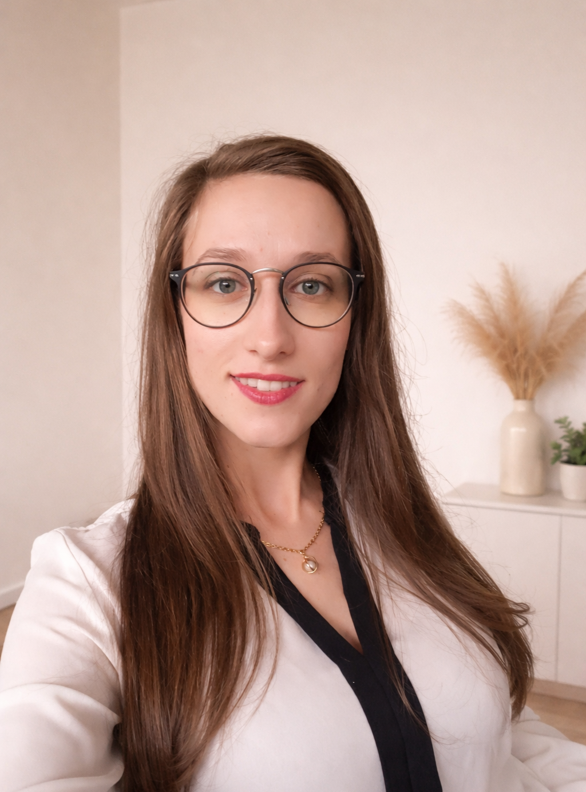
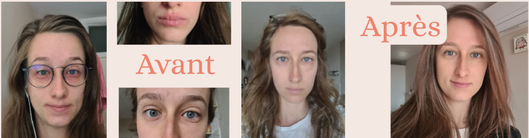
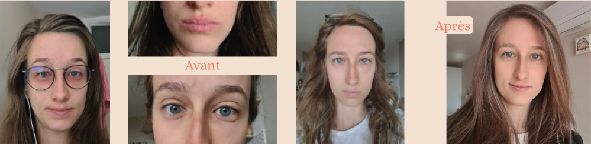
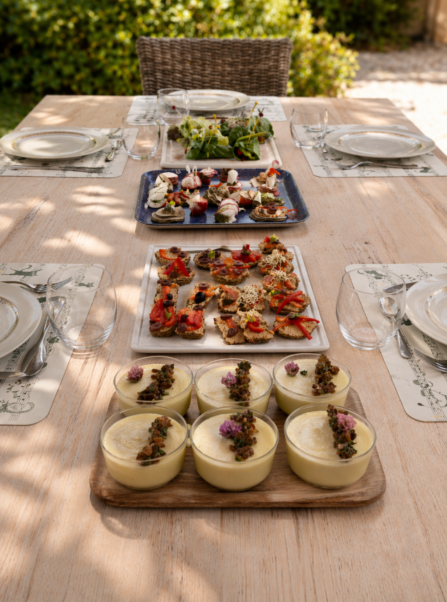
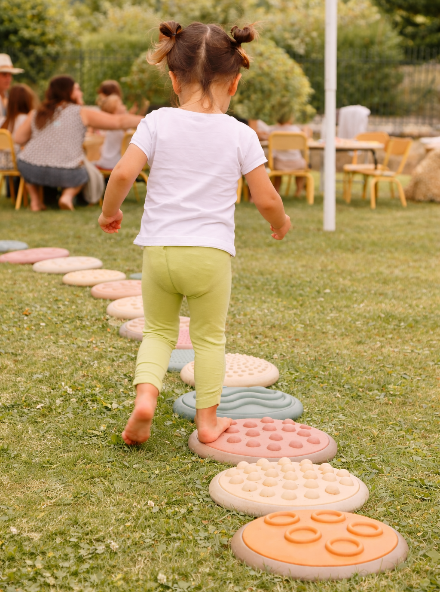

Qui suis-je ?
Comment passe-t-on d’enseignante de français pour les étrangers à
doula et naturopathe périnatale ?
Bien que les deux filières puissent paraitre lointaines ; elles
représentent une même partie de moi : le désir de transmettre et
d’apporter les outils nécessaires vers l’autonomie : en langue comme
en santé.
Pour comprendre mon parcours, il faut savoir que j’ai toujours eu
des problèmes de santé (allergies, eczéma, respiration par la
bouche…). Je suivais classiquement l’alimentation préconisée par le
système médicale, trois repas par jour, avec tous les groupes
d’aliments et les prescriptions qui les accompagnent.
Médicaments, pommades, antihistaminiques et contraceptifs n’avaient
pas de secrets pour moi mais aucun effet positif, bien au contraire.
J’ai même entendu ma dermatologue me dire « je ne pense pas pouvoir
vous guérir » ! Incapable de comprendre pourquoi la médecine m’avait
tourné le dos, j’ai fait mes propres expériences alimentaires en
arrêtant quelques aliments.
En 2019, l’arrêt complet des produits laitiers a eu un impact
considérable ! Mon visage s’était transformé !



Comme je ne souhaitais pas m’arrêter en si bon chemin, mes
recherches m’ont menée à une naturopathe merveilleuse qui prône une
alimentation de santé.
Je suis maintenant ses recommandations depuis 2022.
Être doula et naturopathe est un moyen de faire connaitre son
travail par mon expérience personnelle et en accompagnant toute
personne désirant vivre la pleine santé. Loin de rejeter la
médecine, j’estime qu’il est important que les gens comprennent le
fonctionnement de leur corps et qu’ils puissent faire des choix
éclairés lorsqu’il s’agit de manger ou de suivre les prescriptions
médicales.
Depuis 2024, je pratique également le flux libre instinctif (FLI).
Cette méthode consiste à savoir quand aller aux toilettes pour
“fluer” : évacuer le sang ; comme réapprendre à aller sur le pot.
En effet, je n’utilise plus de tampons, serviettes hygiéniques, cups
et autres produits associés aux règles mais j’ai réappris à me
connecter à mon corps. Je suis inscrite à l’académie du flux libre
instinctif de Mélissa Carlier, kinésithérapeute pionnière du
mouvement en France.
A mon tour, je suis devenue ambassadrice du FLI en 2026.

Dans le but d’avoir plusieurs cordes à mon arc, j’ai également passé
un CAP petite enfance (AEPE) pour travailler en crèche et ainsi
gagner de l’expérience auprès des enfants. Être en mesure d’assurer
une garde d’enfants ainés si les personnes qui accouchent en aurait
besoin ou être capable de m’occuper d’un bébé si le ou les parents
veulent un moment pour eux a toujours fait partie de ma vision du
rôle d’une doula.
Ainsi je suis agent de puériculture depuis juillet
2024, dans diverses crèches Cannes et alentour où je m’occupe des
bébés et bambins de tout age : de 3 mois à 3 ans. Cette expérience
est particulièrement intéressante dans les domaines du développement
de l’enfant, son adaptation à un environnement inconnu,
l’accompagnement des familles et me permet de travailler avec
différents corps de métier : infirmières, puéricultrices,
éducatrices de jeunes enfants, psychologues, psychomotriciennes, art
thérapeutes et pédiatres desquels j’apprends beaucoup.
Formée à
distance par l’école internationale Doula Cybèle, centre de
formation canadien, j’ai obtenu mon titre de doula et naturopathe
périnatale en 2025. J’exerce maintenant à Cannes et aux alentours :
à voir ensemble où je me déplace pour des consultations et suivis de
consultations. Polyglotte, je peux vous parler en français, en
anglais et en italien !